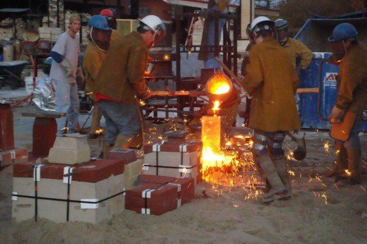
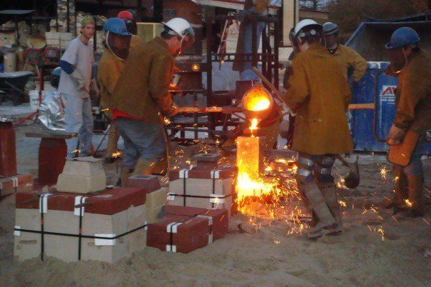
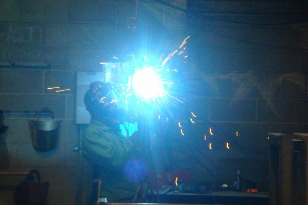
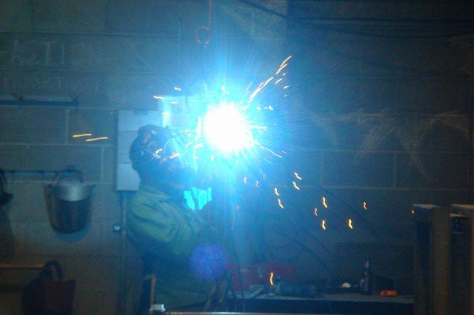

Early Undergraduate Works
 

 

During my undergraduate degree I studied under Thad Duhigg, He worked primarily in large cast work. I learned a great deal about processes of fabrication and casting, composition of form, and the craft behind producing sculpture. This was the begining of my first real independant research as to what career path I would choose. My early work was primarily large cast and fabricated figurative sculpture.
Late Undergraduate Works

As my work developed I became increasingly interested in how the IT field was changing the ways people interacted. This infuenced my decicion to move away from figurative work and move towards "new media."
Early Graduate School Works
In my early graduate school works I focused largely on kinetic sculpture as a honed my skills in coding, and physiclal programing. These works were signifigant to my creative practice, but did not still engaged the viewer in a passive manner. I wanted to create objects that had some form of decision making capability or an interactive component.
Late Graduate School Works
In my late graduate school work I used physical programming control kinetic elements of the work. I aimed to combine my new skills with digital and analog ics with my mechanical aptitude. In these works each component comprising the sculpture carries out its task unaware of its counterparts. Through each unit or parts place in a larger system the significance of the single component is transcended. The qualities of the whole now exceed the qualities of the parts. In this way the objects self-serving purposes are what make it significant. Each part of our own body continues its actions. Combined our parts define who we are. Like each of these components we are part of a larger system that remains in balance. We exist as a part of a world, a space, unaware of our significance or futility.